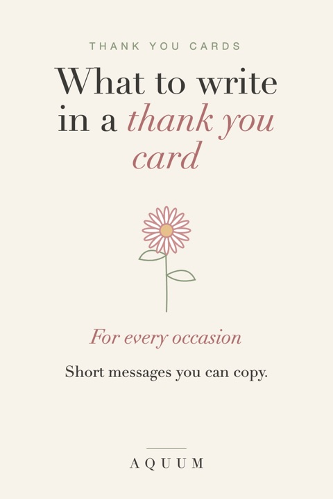

What to Write in a Thank You Card: Messages for Every Occasion
2026-10-03
Written by the team behind Aquum, a small birth flower gift shop. How we make money.

A thank you card doesn't need to be long. It needs to be specific. "Thank you for the gift" could be about anything; "Thank you for the blue scarf, I've worn it every day this week" is about one person and one thing, and that's what people remember.
Here's a simple formula and messages for the most common occasions. Use them as they are or change a few words to make them yours.
The formula
- Thank them for the specific thing: name the gift, the help, the dinner.
- Say how you used it or how it made you feel: one sentence is enough.
- Look ahead or close warmly: "Can't wait to see you at Christmas", "Lots of love".
"Thank you so much for the cookbook! We made the lemon pasta on Sunday and it's already a favorite. Come over and try it soon."
For a gift
- "Thank you for the beautiful [gift]. It's already found a spot on [where], and I smile every time I see it."
- "You always know exactly what I'll love. Thank you for the [gift]."
- "Thank you for thinking of me. The [gift] is perfect, and so thoughtful."
- For money or a gift card: "Thank you for your generous gift. I'm putting it toward [specific thing], so you'll be part of it."
For a birthday
- "Thank you for making my birthday so special. Your card made me laugh out loud."
- "Thank you for the [gift] and for remembering, every single year."
If the gift was something with their birth flower, say so: "And thank you for the daisies: I didn't know they were my birth flower until you told me!" More in our birthday gift ideas by month.
For a wedding gift
- "Thank you for celebrating with us and for the lovely [gift]. We'll think of you every time we use it."
- "Having you there meant so much. Thank you for the generous gift; it's going toward [our first trip / our new couch]."
Wedding thank-yous traditionally go out within three months. See our bridesmaid gift guide for something to thank your wedding party.
For a baby shower gift
- "Thank you for the sweet [gift]. [Baby's name] is already wearing it, and it's the softest thing we own."
- "Thank you for showering us with love (and diapers!). We're so lucky to have you."
A framed baby birth stats print is a lovely thank-you for grandparents, too.
For a host
- "Thank you for a wonderful evening. The food, the company, the candles: everything was perfect."
- "Thank you for having us for Thanksgiving. Your table always feels like home."
Our free Thanksgiving cards say "Thankful for you" and have each person's birth flower on the front.
For a teacher, nurse or caregiver
- "Thank you for your patience and kindness with [name] this year. You made a real difference."
- "We'll never forget how you took care of us. Thank you, from the bottom of our hearts."
More ideas in gifts for teachers and gifts for nurses.
For help during a hard time
- "Thank you for the meals, the messages and for simply being there. It meant more than I can say."
- "I couldn't have gotten through these weeks without you. Thank you."
- "Your flowers brightened the house when we needed it most. Thank you."
For a coworker or your boss
- "Thank you for your help on [project]. I learned a lot working with you."
- "Thank you for the thoughtful gift and for making this such a good place to work."
Add a flower that says thank you
If you're sending flowers with the card, a few have meant "thank you" for centuries: sweet peas ("thank you for a lovely time"), pink roses and hydrangeas. Our guide to flowers that mean thank you, love and more has the full list.
Finishing touches
- Write it by hand, even if it's short.
- Send it soon: within a week or two for most gifts.
- Use their name at the start: "Dear Ana" reads warmer than "Hi!".
Writing a different card? Here's what to write in a birthday card and what to write in a Christmas card.